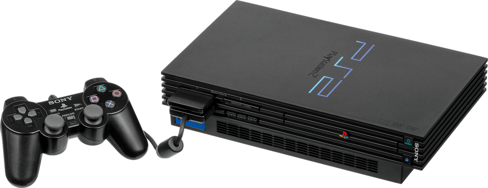

Play Station 2
Sixth Generation Master

The first version of the Play Station 2 console.
A list of important PS2-related dates:
- 1999 - PlayStation 2 is announced!
- 2000 4th of March - PlayStation 2 is released in Japan
- 2000 26th of October - PlayStation 2 is released in North America
- 2000 24th of November - PlayStation 2 is released in Europe
- 2000 30th of November - PlayStation 2 is released in Australia
- 2004 Slim revision of PS2 is released
- 2011 150 million consoles sold worldwide
- 2013 4th of January PlayStation 2 is discontinued
PlayStation 2 has had one of the longest runs for a video game console, and there were over 3,784 games released since its launch. It has remained popular well into the seventh generation of consoles.